1
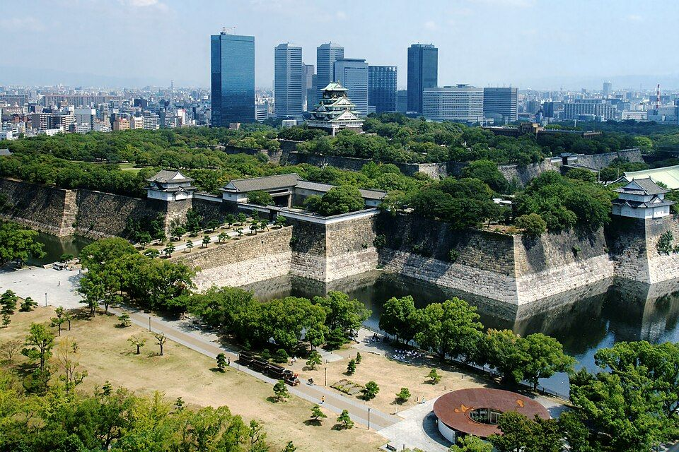
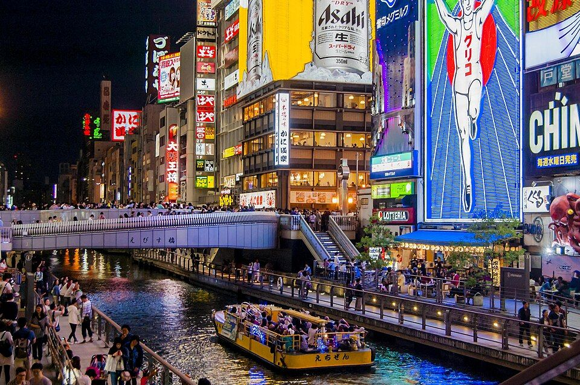
오사카성 · 도톤보리
도심 산책과 먹거리 거리
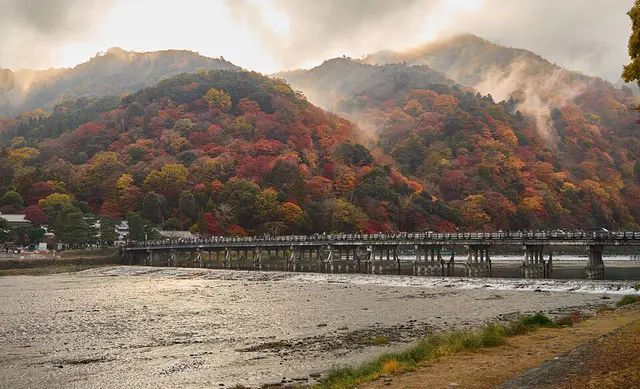
숙소를 옮기지 않아도 되는, 가장 편한 코스입니다.


도심 산책과 먹거리 거리
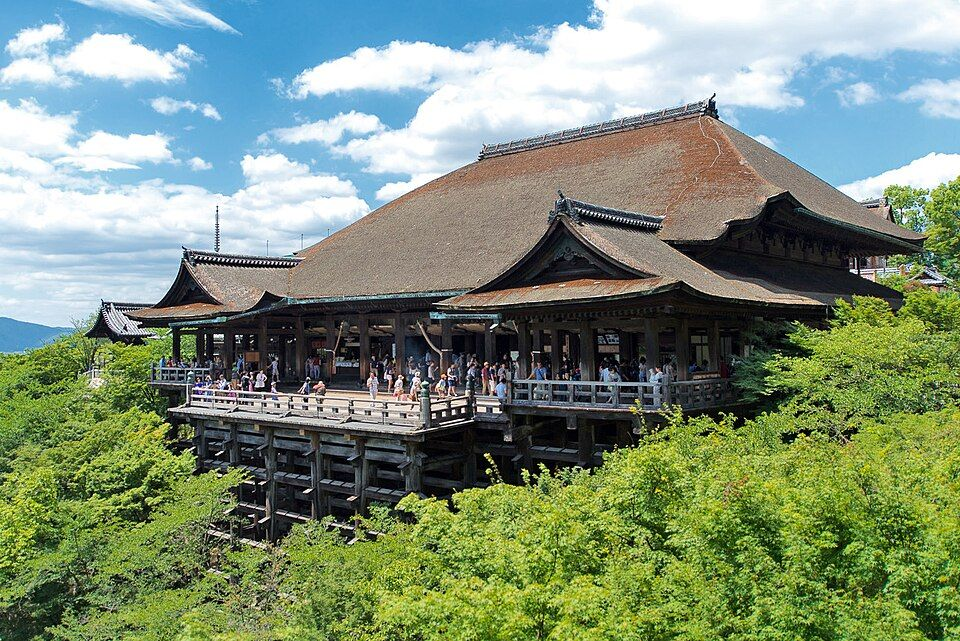
단풍 명소. 저녁 라이트업은 대기가 깁니다.
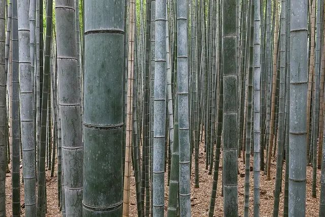
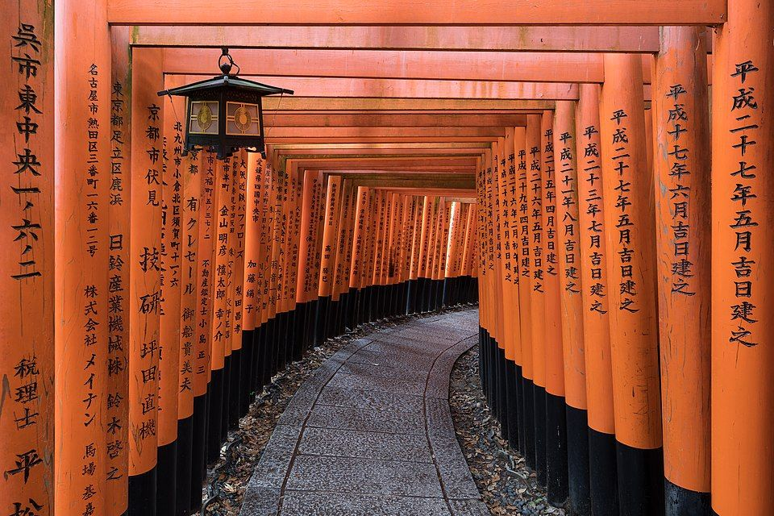
대나무 숲과 붉은 도리이 길
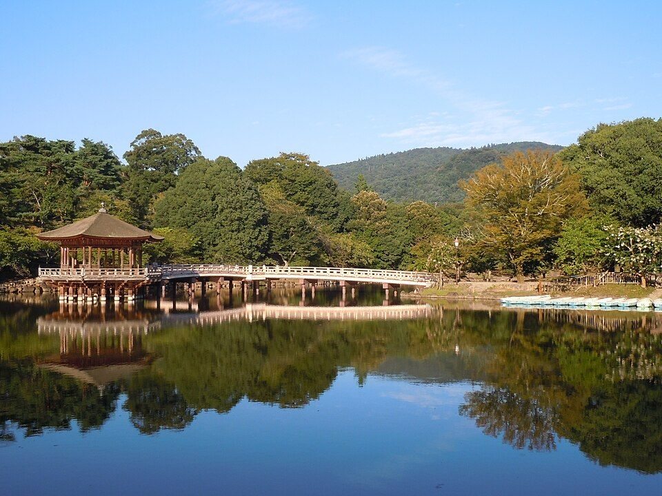
부모님과 가볍게 걷기 좋습니다.
아침저녁에 더 춥습니다.
단풍은 11월 하순부터 12월 초순이 절정이라 시기가 맞습니다.
이 시기엔 대중교통이 붐비니 하루 2~3곳만 보는 일정이 좋습니다.
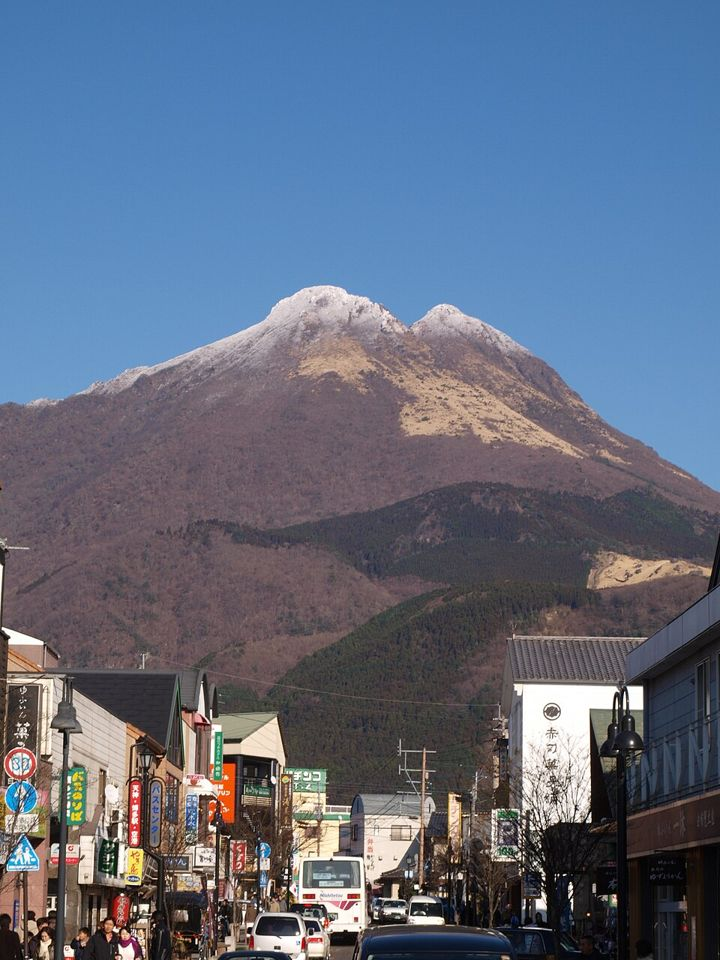
비행이 가장 짧고, 온천 료칸에서 하룻밤 쉬어갈 수 있습니다.
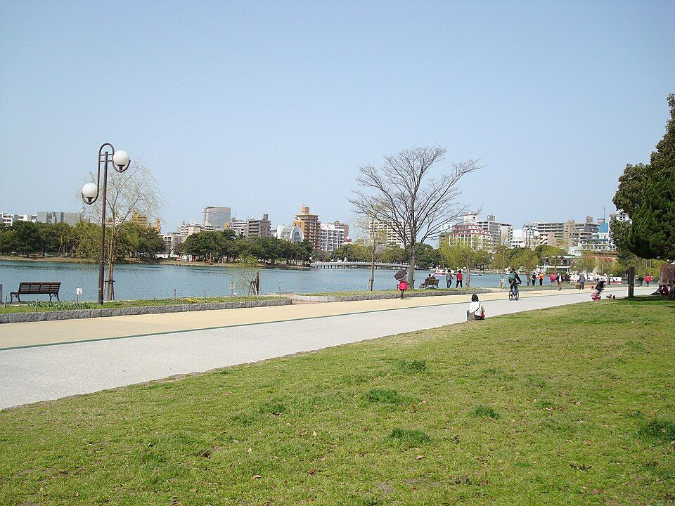
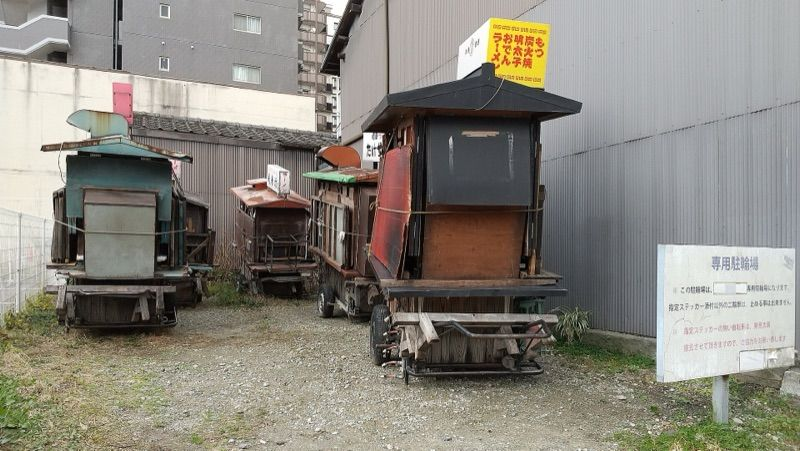
평지라 걷기 편하고, 저녁엔 포장마차 거리
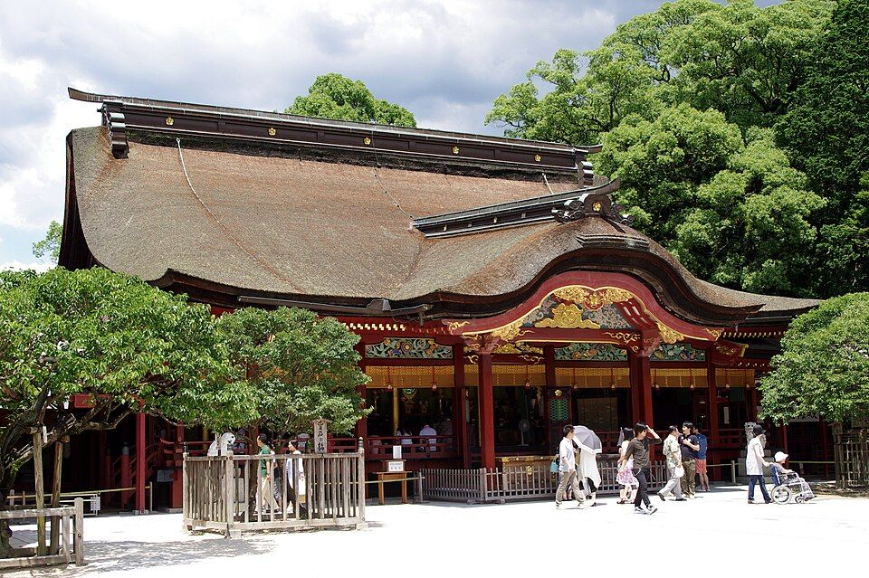
계단이 많은 곳(카마도 신사)은 피하는 편이 좋습니다.
온천 마을 산책
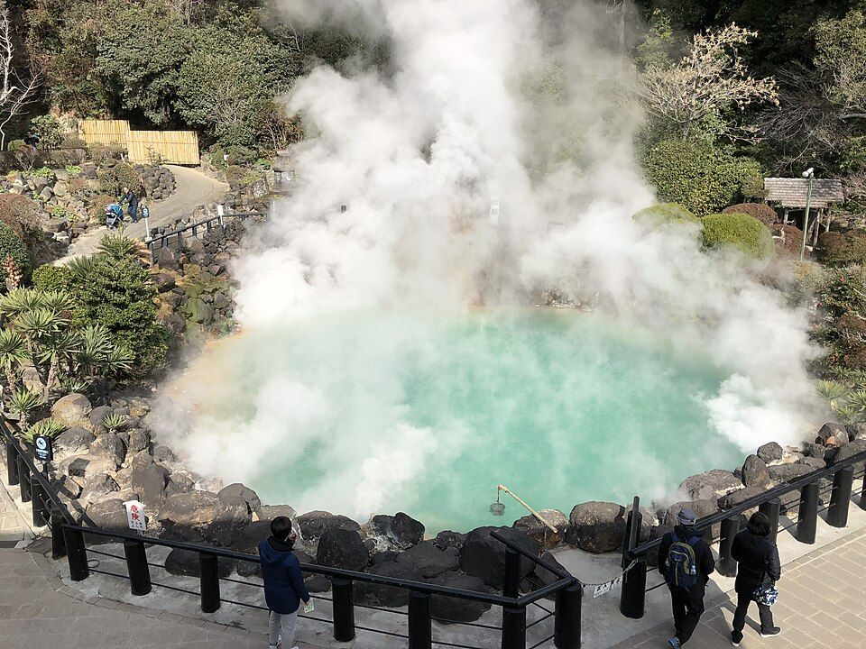
색색의 온천 지대를 돌아보는 코스
바닷바람이 셉니다.
산간이라 훨씬 춥습니다.
후쿠오카 단풍은 간사이보다 약 1주일 늦어 12월 초가 절정입니다.
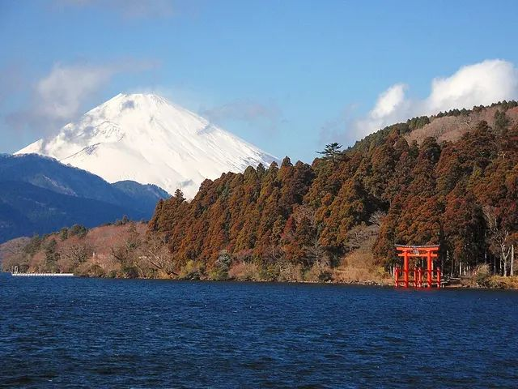
볼거리는 가장 많지만 환승과 이동이 많아 3박 4일엔 빠듯합니다.
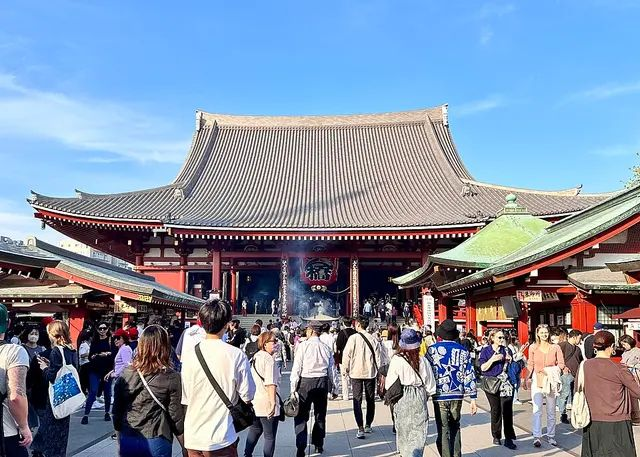
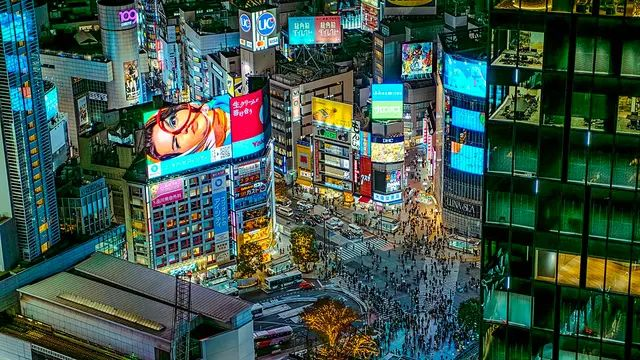
전통과 번화가를 하루에 볼 수 있습니다.
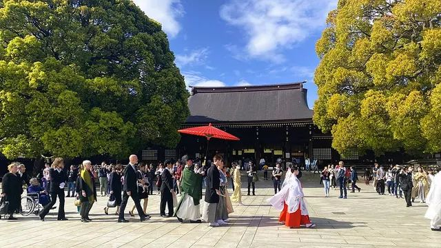
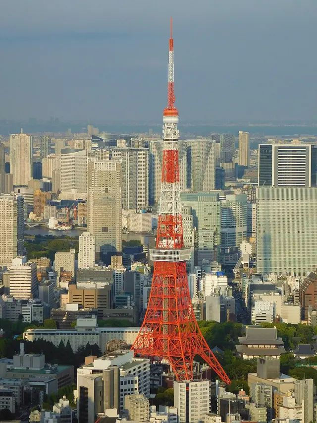
숲길 산책과 야경
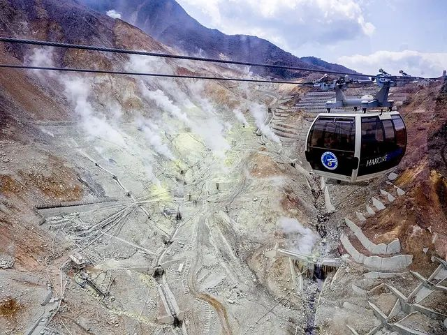
화산 지대의 유황 연기와 검은 달걀
맑은 날엔 호수 너머로 후지산
맑은 날이 많습니다.
하코네에서는 후지산이 잘 보이는 시기입니다.
하코네는 로프웨이·배·버스 환승이 많아 프리패스를 쓰면 편합니다.
← 표를 좌우로 밀어서 보세요 →
| 오사카+교토 | 후쿠오카+벳푸·유후인 | 도쿄+하코네 | |
|---|---|---|---|
| 항공 | |||
| 비행시간 | 약 1시간 50분~2시간 | 약 1시간 30분 | 약 2시간 20~30분 |
| 저가항공 | 15~25만원 | 15~25만원 | 20~30만원 |
| 대형항공사 | 35~70만원 | 30~50만원 | 35~60만원 |
| 4인 합계 | 60~100만원 | 60~100만원 | 80~120만원 |
| 날씨 (낮/밤) | |||
| 도시 | 오사카 13~14도 / 5~6도 교토 13도 / 3도 | 후쿠오카 14도 / 6~7도 | 도쿄 14~15도 / 6~7도 |
| 온천 지역 | 해당 없음 | 벳푸·유후인 10도 / 0도 | 하코네 10도 / 2도 |
| 관광 | |||
| 대표 | 오사카성, 기요미즈데라, 아라시야마, 나라 | 오호리 공원, 다자이후, 유후인, 지옥온천 | 센소지, 시부야, 메이지신궁, 오와쿠다니 |
| 단풍 | 11월 하순~12월 초 절정 | 12월 초 절정 | 도쿄는 11월 하순 위주 |
| 숙박·교통 | |||
| 공항→시내 | 약 40분 | 5~10분 | 30분~1시간 |
| 도시 간 | JR 약 30분 | 특급·버스 약 2시간 | 로망스카 약 85분 |
| 숙소 | 한 곳에 계속 머묾 | 호텔 + 료칸 1박 | 숙소 이동 필요 |
| 4인 객실 | 패밀리룸 또는 2실 | 다다미 가족실 가능 | 2실 권장 |
| 편의도 | 5점 중 5점 | 5점 중 4점 | 5점 중 3점 |